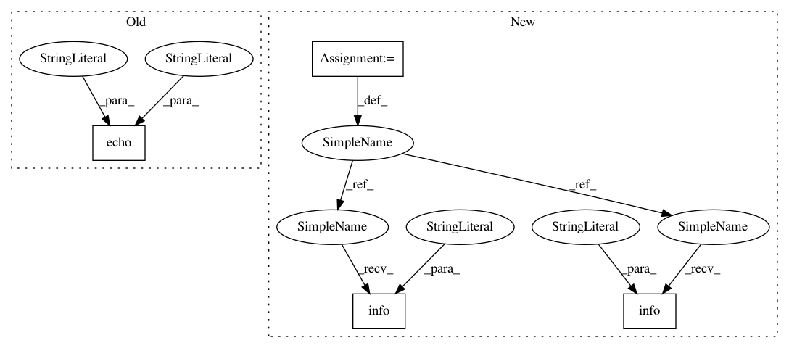

834a4f2701482fc13af9cdf4873ec92941ba853e,cnvlib/vary.py,,_select_sample,#Any#Any#Any#,92
Before Change
if "Derived" in tag:
sample_id = tag["Derived"]
normal_id = tag["Original"]
echo("Selected tumor sample", sample_id,
"and normal sample", normal_id,
"from the VCF header PEDIGREE tag")
break
elif "GATKCommandLine" in vcf_reader.metadata:
for tag in vcf_reader.metadata["GATKCommandLine"]:
if tag.get("ID") == "MuTect": // any others OK?
After Change
if "Derived" in tag:
sample_id = tag["Derived"]
normal_id = tag["Original"]
logging.info("Selected tumor sample %s and normal sample %s"
" from the VCF header PEDIGREE tag",
sample_id, normal_id)
break
elif "GATKCommandLine" in vcf_reader.metadata:
for tag in vcf_reader.metadata["GATKCommandLine"]:
if tag.get("ID") == "MuTect": // any others OK?
options = dict(kv.split("=", 1)
for kv in tag["CommandLineOptions"].split()
if "=" in kv)
sample_id = options.get("tumor_sample_name")
normal_id = options["normal_sample_name"]
logging.info("Selected tumor sample %s and normal sample "
"%s from the MuTect VCF header",
sample_id, normal_id)
break
if sample_id:
pass
In pattern: SUPERPATTERN
Frequency: 4
Non-data size: 4
Instances
Project Name: etal/cnvkit
Commit Name: 834a4f2701482fc13af9cdf4873ec92941ba853e
Time: 2015-10-28
Author: eric.talevich@gmail.com
File Name: cnvlib/vary.py
Class Name:
Method Name: _select_sample
Project Name: etal/cnvkit
Commit Name: 834a4f2701482fc13af9cdf4873ec92941ba853e
Time: 2015-10-28
Author: eric.talevich@gmail.com
File Name: cnvlib/ngfrills/faidx.py
Class Name:
Method Name: _fasta_extract_regions_safe
Project Name: etal/cnvkit
Commit Name: 834a4f2701482fc13af9cdf4873ec92941ba853e
Time: 2015-10-28
Author: eric.talevich@gmail.com
File Name: cnvlib/commands.py
Class Name:
Method Name: batch_run_sample
Project Name: etal/cnvkit
Commit Name: 834a4f2701482fc13af9cdf4873ec92941ba853e
Time: 2015-10-28
Author: eric.talevich@gmail.com
File Name: cnvlib/vary.py
Class Name:
Method Name: _select_sample
Project Name: etal/cnvkit
Commit Name: 834a4f2701482fc13af9cdf4873ec92941ba853e
Time: 2015-10-28
Author: eric.talevich@gmail.com
File Name: cnvlib/target.py
Class Name:
Method Name: split_targets